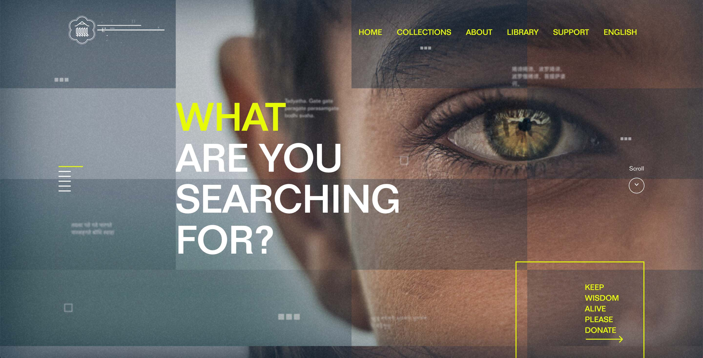
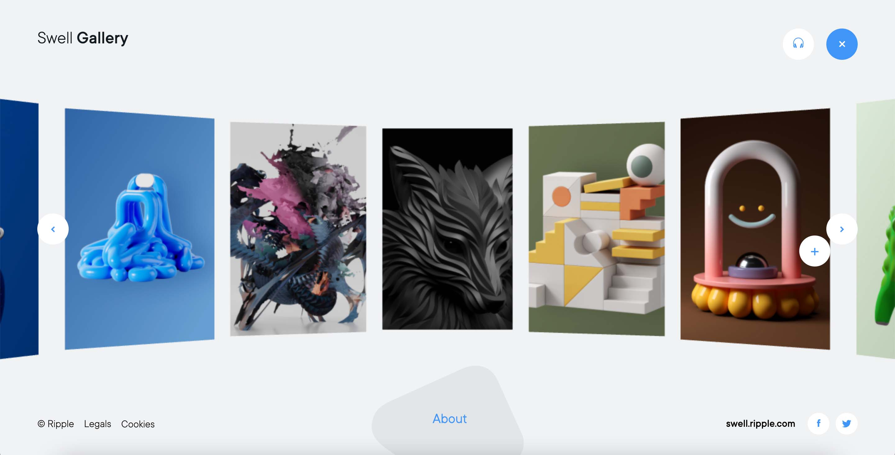
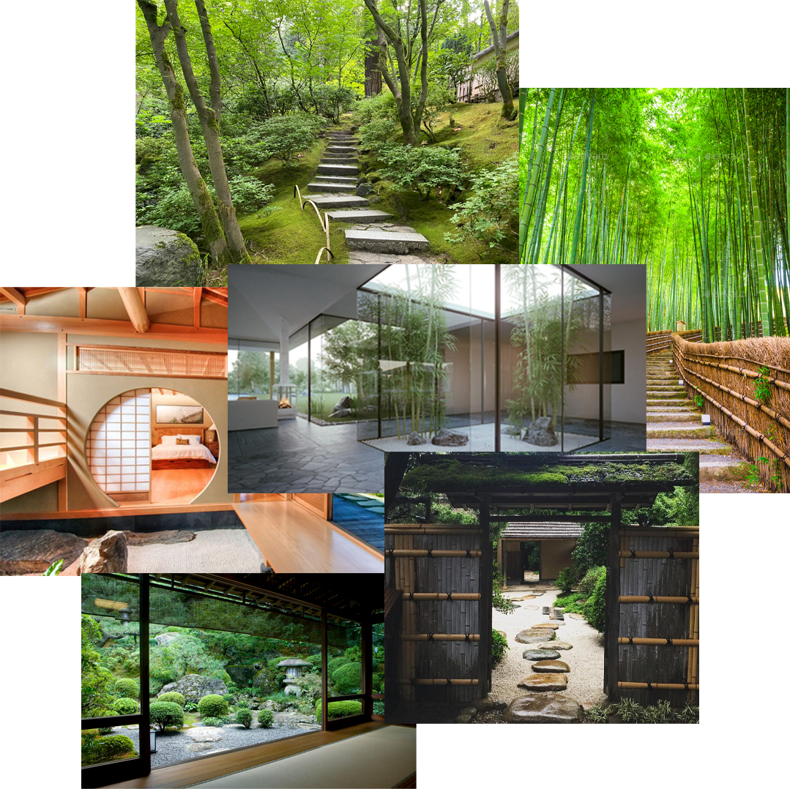
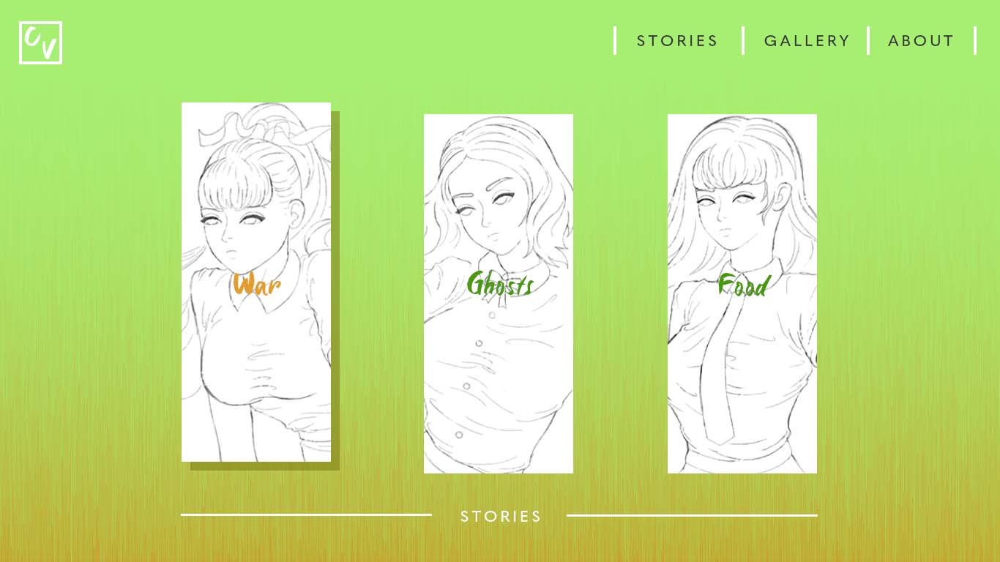
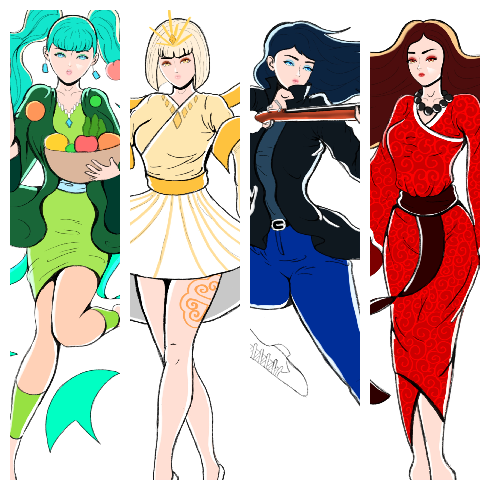
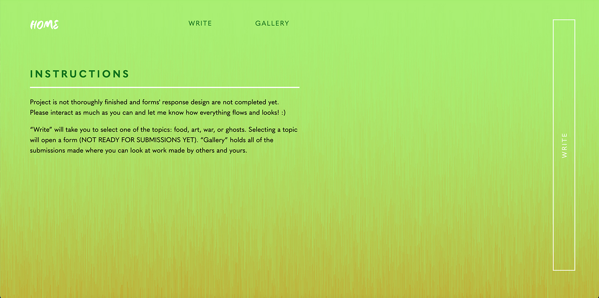
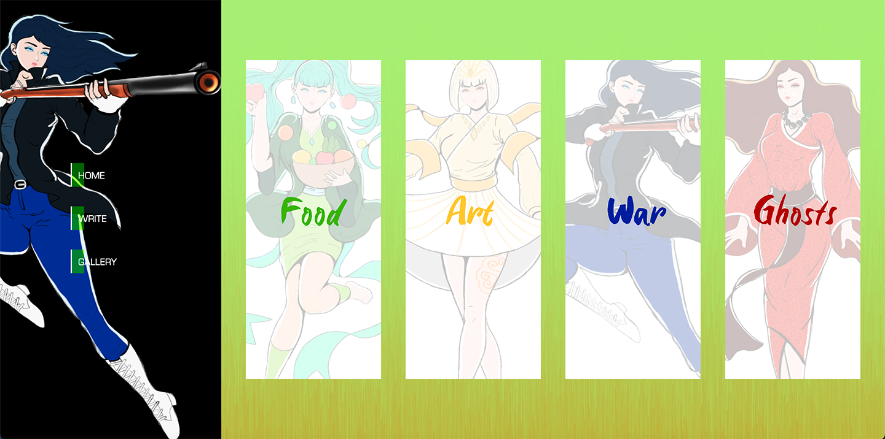

- Those who still have knowledge of Hmong culture are aging and passing away
- Modern Hmong people are losing touch with their culture due to Westernization
- "For Us" was designed as a platform for Hmong people to share their stories and information about Hmong culture
- Intended to preserve and share knowledge
User Experience
- I wanted the platform to have a modern chic inspired by Asian Legacy Library
- Swell Gallery 3D gave me the inspiration for the panels which would initiate the forms
- It should feel as though you're interacting with a comic, manga, or painting


Visual
- I wanted to atmosphere to reflect Buddhust Zen gardens. I sought to reflect this by prioritizing black, white, and green as the central colors
- For title fonts I used a script font to match scrolls.
- The font for text was Eurostile which was made to match futuristic/contemporary styles.
- Peers suggested to make the design more culturally unique so I implemented a greeting screen that says "Nyob Zoo" which simply means hello in Hmong


User Interface
- The left portion was dedicated to the menu and the slide for characters for indicating which panel you were on: food, art, war, or ghosts
- I love illustrating characters so they were created as visual guidance
- Nearly every element has an encoded animation for fading in and out when clicked or on hover for a natural and seamless experience

Revisions
- The project went through MASSIVE changes
- Originally had three separate web pages
- Extremely empty at first (where most of the user feedback went to) so the implementation of illustrations and the left portion for navigation filled the gaps
- I got stuck then went back to step one by reverse engineering the Back4App Exercises


Summary
- Definitely give full attention to your Javascript and understand how EVERYTHING works
- This project was extremely complex and even more so than my Squid Game Mad Lib Final from DES157A
- This is the pinnacle of how I imagined my work to be like back at the start of DES157A
- I'm most proud to have made a database for my people
- Access "For Us"